Curonian Spit Navigation
The task was to develop a new logo and navigation system for the national park Curonian Spit near Kaliningrad. Also try to make this place more attractive for tourists by adding some AR technologies to the identity.

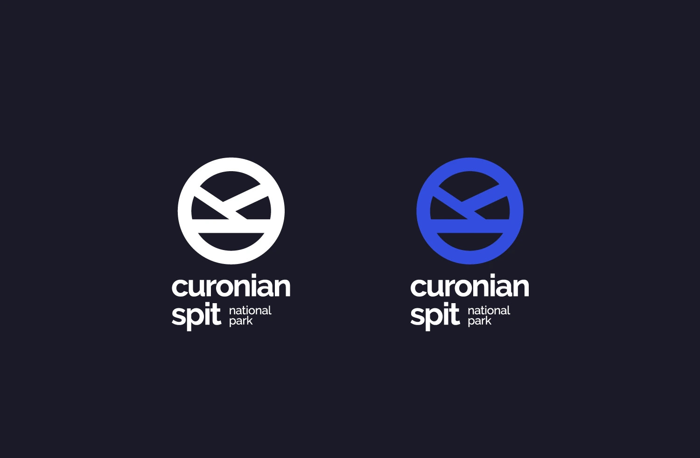
While making a logo I kept in mind it must be easy to read from the car on the road. Logo consists of a circle with the horizontal letter K inside, which symbolises the sand dunes. Also the russian name Kurshskaya Kosa starts from K.
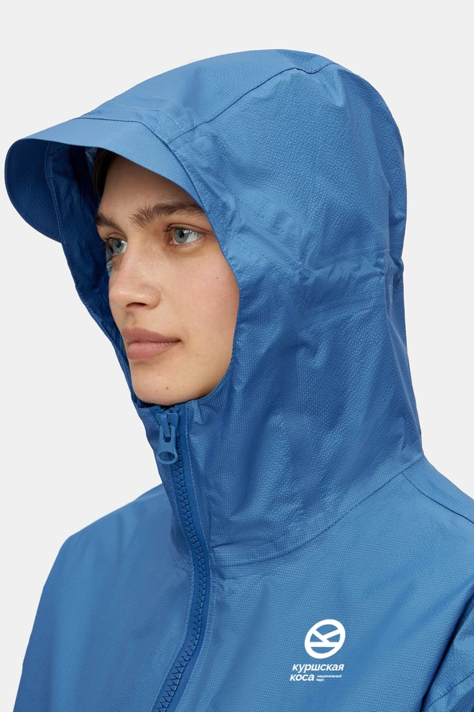
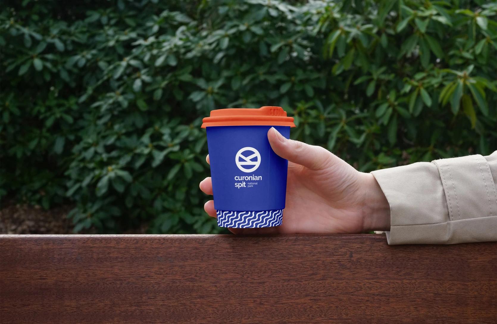

Consept.
The Curonian Spit is a unique combination of landscapes: sand dunes, pine forests, heights, lakes. The main idea was to create combination of patterns that symbolise the variety of landscapes and uniqueness of this tourist destination. These patterns are used in tourists trail maps and as a graphic elements in merch
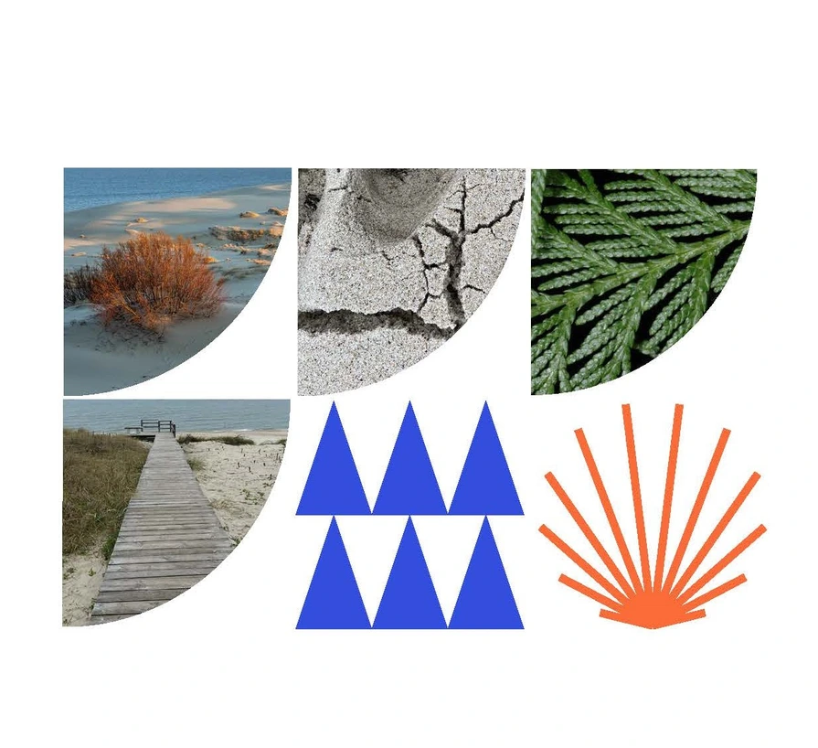
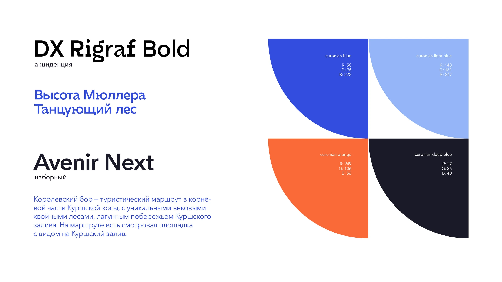
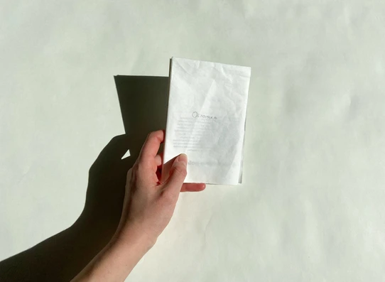
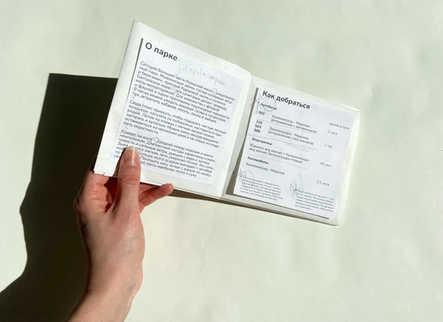
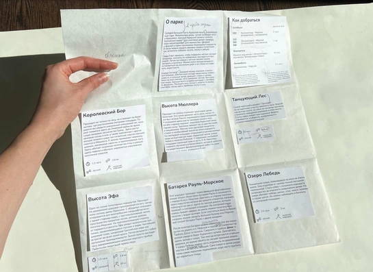
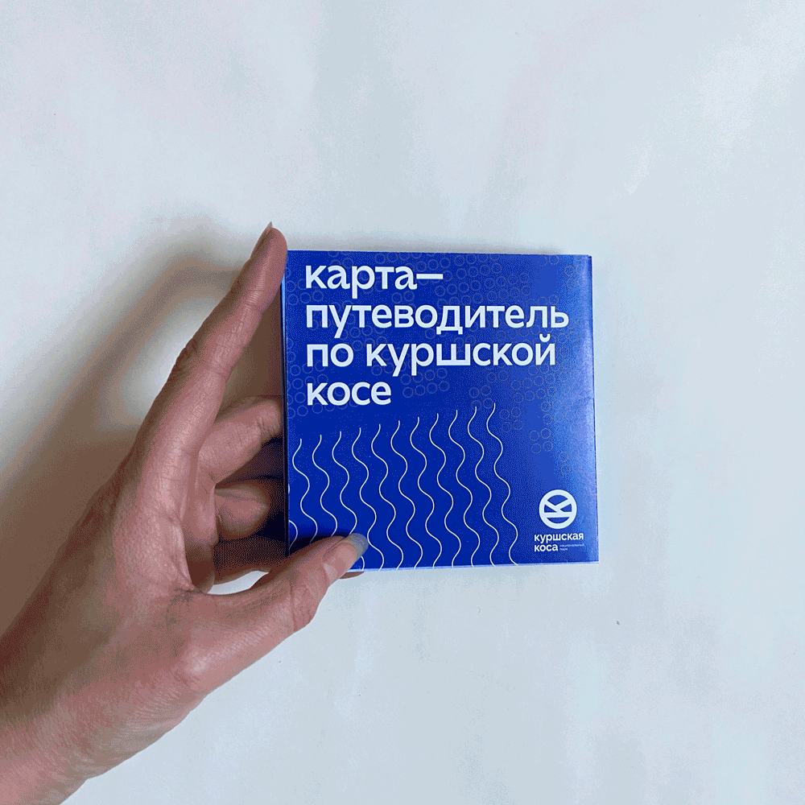

I developed a map guide with tourist routes. After several guide prototypes I ended up with a 2sided map, with all rutes on 1 side and route descriptions on the other. The Curonian Spit App really helped me finding more information.


There are 5 main routes in the park and they are far from each other. Every route has it's own unique views and trails. I searched how many different landscapes each route has, what are the main attraction points I should put on the map and collect small description texts abut the routes.
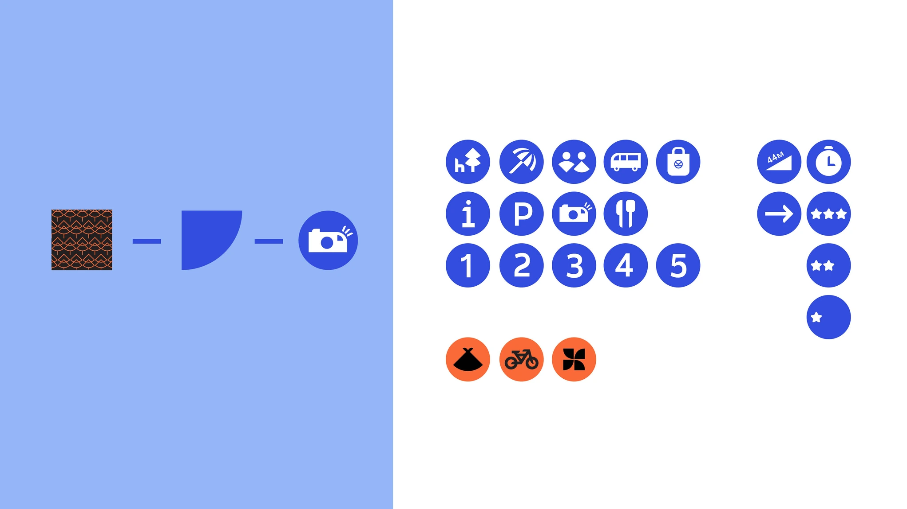

I created 5 information stellas to be placed on the road, 5 infostands with map and route description to be placed at the beginning of the route and in the middle. Also added small infostands with directions and rules signs.


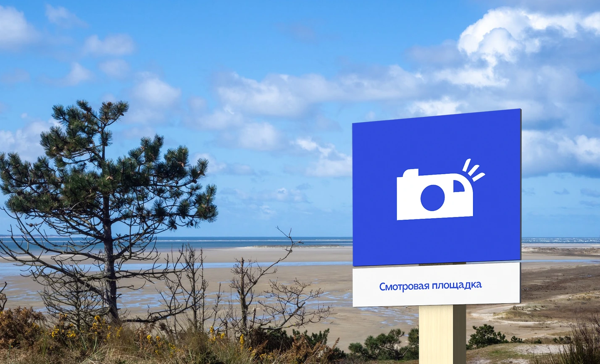
I include the duration and distance to every route to help tourists understand the level of routes hardness. Also each stand has an AR code to launch augmented reality objects.

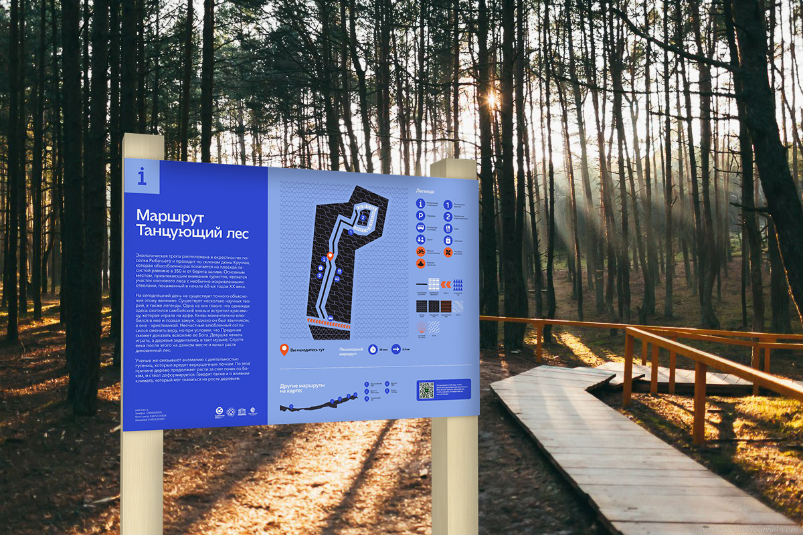

Including AR activity can help attract more youth tourists to see this destination and can be used in advertising events of the park. These AR objects were created in Adobe Aero and consist of graphics I used in the maps and landscapes. I offer tourists to launch this AR objects somewhere on the route points.